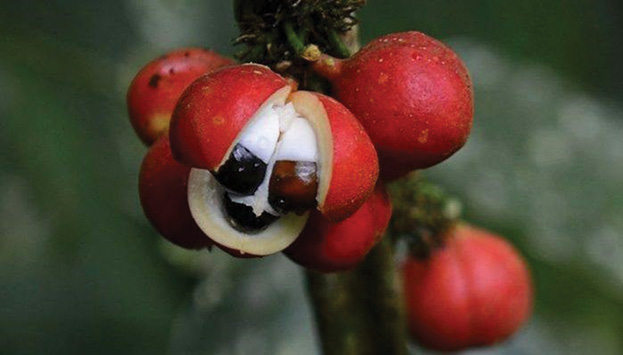

Zastrupitev z guarano: prikaz dveh primerov
Acute guarana poisoning: report of two cases
Izvleček
Guarana (
V prispevku sta predstavljena dva bolnika, ki sta zaužila čezmeren odmerek guarane in imela opisane znake zastrupitve. Guarana lahko v priporočenih odmerkih poslabša bolezni srca (predvsem motnje srčnega ritma, koronarno bolezen srca, srčno popuščanje) in sladkorno bolezen ter negativno vpliva na zdravje nosečnic, doječih žensk in otrok, ki jim zato odsvetujemo uživanje guarane.
Zdravljenje zastrupitev z guarano je simptomatsko, predvsem z benzodiazepini ter nadomeščanjem tekočine in elektrolitov.
Abstract
Guarana (
Caffeine poisoning may result in irritability, insomnia, anxiety, restlessness, muscle twitching, nausea or vomiting, rapid heart beat or cardiac arrhythmias, high blood pressure, sweating, diuresis and gastroinestinal disturbance.
This report presents two cases of guarana overdose with the common caffeine poisoning symptoms and signs. Guarana in therapeutic doses can exacerbate underlying cardiac disease (especially cardiac arrhythmias, coronary heart disease, heart failure) and diabetes. Furthermore, children, pregnant and nursing women should avoid guarana as well.
Treatment of guarana poisoning is symptomatic, mainly with benzodiazepines and by fluid and electrolyte substitution.
1 Uvod
V zadnjih letih je opazen porast bolnikov z zdravstvenimi težavami zaradi čezmernega uživanja izdelkov, ki vsebujejo kofein. To je posledica povečane ponudbe energijskih napitkov, poživil in drugih pripravkov z vsebnostjo kofeina (1,2). V javnosti je vse bolj priljubljena rastlina guarana, ki jo na trgu lahko najdemo v obliki kapsul, tablet, prahu, čajev, sirupov, energijskih pijač in vitaminskih napitkov (1,3).
Guarana se promovira kot naravna sestavina z raznovrstnimi učinki: za boljši spomin in koncentracijo, manjšo utrujenost, večjo energijo in budnost, proti migrenam, za pomoč pri izgorevanju telesnega maščevja in za zmanjšanje apetita. Pripisujejo ji tudi protibakterijske in antioksidativne lastnosti, zato naj bi blagodejno vplivala na številne vnetne bolezni. Zaradi svojega poživljajočega učinka jo že od nekdaj s pridom uporabljajo kot nadomestek kave. Zaradi vseh teh učinkov je postala privlačna. Zato se je razširila in od leta 1958 postala širše znana po vsem svetu (1,4).
Guarana ali strokovno

Učinkovino pripravijo tako, da iz plodov izluščijo še nezrela semena, jim odstranijo semensko lupino, jih spražijo in zmeljejo, prašek oblikujejo skupaj z vodo v palčke, te pa posušijo in ponovno spražijo. Izdelek se potem imenuje pasta guaranae (6).
Sestavne komponente semena guarane so prikazane v Tabeli 1 (7). Poudariti je potrebno predvsem visoko vsebnost kofeina, zaradi katerega guarana deluje spodbujajoče. Pri prevelikih odmerkih pa lahko nastopijo zdravstvene težave prav zaradi prevelikega odmerka kofeina (1).
|
Sestavine semena guarane |
Število delcev posameznih sestavin na milijon delcev (ppm) |
|
kofein |
25.000–76.000 |
|
teofilin |
570 |
|
tanin |
85.000–120.000 |
|
teobromin |
200–400 |
|
maščobe |
< 30.000 |
|
beljakovine |
< 98.600 |
|
smola |
< 70.000 |
|
škrob |
50.000–60.000 |
|
adenin, gvanin, hipoksantin, holin, D-katehin |
> 100.000 |
Po svetu so zabeležili kar nekaj primerov zaužitja prevelike količine guarane (2). Namen našega prispevka je predstaviti bolnike, ki so se zdravili v Centru za klinično toksikologijo in farmakologijo Univerzitetnega kliničnega centra (UKC) v Ljubljani zaradi zastrupitve z guarano.
2 Prikaz kliničnih primerov
2.1 Klinični primer 1
18-letni bolnik si je z namenom, da bi povečal svojo koncentracijo in budnost pri učenju za izpit, pripravil napitek. Namesto 1/3 čajne žličke je vzel 3–4 jedilne žlice prahu guarane, kar naj bi ustrezalo približno 600–900 mg kofeina oziroma 8–11 skodelicam kave ekspreso (ena 60 ml skodelica kave ekspreso vsebuje okoli 80 mg kofeina) ali 2–3 litrom energijske pijače (100 ml energijske pijače vsebuje okoli 30 mg kofeina). Po manj kot dveh urah po zaužitju je občutil nemir, močnejše bitje srca, čezmerno potenje, glavobol, napetost v trebuhu, povečano uriniranje. Ob pregledu v ambulanti na Internistični prvi pomoči UKC Ljubljana razen pospešenega srčnega utripa (120 utripov na minuto), povišanega krvnega tlaka (150/90 mmHg) in rahlo razširjenih zenic, drugih odstopanj od normale ni bilo zaznati. Elektrokardiogram (EKG) je pokazal mejno podaljšano dobo QTc (464 ms), v laboratoriju pa so zaznali blago znižanje kalija v krvi (3,7 mmol/L). Sicer je bil bolnik zdrav in ni prejemal nobenih zdravil.
Na oddelku je zaradi nemira prejel diazepam 5 mg peroralno; drugi terapevtski ukrepi pa niso bili potrebni. Naslednji dan je bil brez kakršnih koli subjektivnih težav. Znaki zastrupitve so izzveneli, zato je bil odpuščen domov.
2.2 Klinični primer 2
23-letni bolnik je en teden uporabljal pripravke za fitnes z vsebnostjo guarane. Poleg tega je bil tisti teden telesno zelo dejaven. Po enem tednu je občutil slabost, neredno in močnejše bitje srca, tiščoč občutek v prsnem košu z mravljinci po obeh straneh telesa, ki so trajali nekaj sekund. Drugih težav ni imel. EKG je pokazal upočasnjen srčni ritem in nespecifični dvig spojnice ST od V2 do V4. Opravili so še ultrazvočni pregled srca in rentgenogram prsnega koša, a preiskavi nista zaznali nenormalnosti. Toksikološke analize bioloških vzorcev pri bolniku niso naredili. Težave so izzvenele v približno devetih urah od začetka pojava simptomov; EKG se je normaliziral. Bolniku so svetovali, da prekine uporabljati pripravke, ki lahko sprožijo motnje srčnega ritma (kofein, tein, guarana in druga poživila).
Obravnavana sta bila še dva primera poskusa samomora s predoziranjem količine guarane v kombinaciji z drugimi psihoaktivnimi snovmi. V teh primerih je bila v ospredju zastrupitev z drugimi snovmi, guarana je bila zgolj dodatek pri predoziranju.
3 Razpravljanje
Učinek guarane je v prvi vrsti povezan z delovanjem kofeina. Guarana vsebuje dvakrat več kofeina, kot ga najdemo v kavnih zrnih (v semenih guarane je približno 2–4,5 % kofeina, medtem ko ga je v kavnih zrnih samo 1–2 %). Guarana vsebuje v svojih semenih še številne druge sestavine (predvsem teofilin in teobromin), ki povečajo delovanje kofeina; zaradi konjugacije kofeina s tanini, ki tvorijo težko topne komplekse, se kofein veliko počasneje sprošča v krvni obtok kot kofein iz kave. Zato deluje bolj enakomerno in dolgotrajno. Stimulacijski učinek traja približno 6 ur (1,8,9).
Kofein v terapevtskih koncentracijah zavira adenozinske receptorje. S tem poveča delovanje adenilat ciklaze in koncentracijo cAMP v plazmi, kar povzroči povečano dejavnost simpatičnega živčevja, to pa poveča sproščanja živčnih prenašalcev, predvsem kateholaminov. Poveča se sistemska žilna upornost, krvni tlak, intenzivnejša je pozornost, budnost in koncentracija (1). Poveča tudi sintezo tromboksana in zavira agregacijo trombocitov (10). Z blokado adenozinskih receptorjev na jukstaglomerulnih celicah v ledvicah vpliva na povečano sproščanje renina, zaradi česar se poveča tudi koncentracija angiotenzina in aldosterona. Rezultat je pogosto in obilno uriniranje (1).
Adrenalin in kofein delujeta sinergistično pri povečanju metabolizma, kar prispeva k izgubljanju telesne teže. V jetrih povzroči, da se sprosti dodatna količina sladkorja v krvni obtok. Tako telo dobi več energije. Poleg tega kofein v maščevju aktivira hormonsko odvisno lipazo in tako spodbudi lipolizo. Spodbudi tudi delovanje peristaltike in žolčnika, zato se maščoba hitreje razgradi, poveča se koncentracija prostih kratkoverižnih maščobnih kislin v debelem črevesju, zato lahko pride do driske, slabosti, trebušnih krčev in dehidriranja (11).
V toksičnih koncentracijah kofein kompetitivno zavira še fosfodiesterazo, zaradi česar so tudi njegovi učinki močneje izraženi. Zaradi zaviranja tega encima v gladkih mišičnih celicah žil poraste količina cAMP, s tem se poveča nastanek renina in dodatno zavre agregacija trombocitov, hkrati pa se zmanjša občutljivost kontraktilnega aparata na kalcij. Zato pride do vazodilatacije (1,10).
Poleg tega kofein zaradi aktiviranja simpatičnega živčevja povzroča okrnjeno endotelno funkcijo, zaradi česar se zmanjša tudi od krvnega toka odvisna dilatacija ožilja (
Kofein prav tako vpliva na sproščanje kalcija iz endotelnih celice, zato se poveča sinteza dušikovega oksida, ki še dodatno povzroča vazodilatacijo žil, hkrati pa se okrepi krčljivost srčne mišice (13).
Zaužitje prevelikih odmerkov kofeina se pokaže s simptomi in znaki: nemirnost, nespečnost, prestrašenost, utrujenost, tresavica, slabost ali bruhanje, pospešeno bitje srca ali motnje srčnega ritma, povišan krvni tlak, rdečica obraza, čezmerno potenje, pogostejše in obilnejše uriniranje, razdraženost črevesja s pogostejšim odvajanjem blata (Tabela 2). V primeru, da ima bolnik vsaj 5 od naštetih simptomov in znakov, lahko govorimo o zastrupitvi s kofeinom (14,15,16). Pri predstavljenih bolnikih je šlo za večino naštetih simptomov in znakov, zato menimo, da je prišlo do zastrupitve s kofeinom, čeprav le-tega nismo potrdili s toksikološko analizo kofeina v krvi.
|
Odmerek kofeina |
Učinki kofeina |
|
nižji odmerki |
nespečnost, nemir, večja pozornost, manjša utrujenost, tresavica, pospešen srčni utrip, povišan krvni tlak, pogosto uriniranje, pospešena prebava |
|
visoki odmerki |
slabost, bruhanje, neredni srčni utrip, glavobol, tesnoba, nizek krvni tlak, hitro dihanje, parestezije po rokah in okoli ust, zavora agregacije trombocitov, epileptični krči |
Kofein v čezmernih odmerkih neugodno deluje na prevodnost in refraktarnost srčne mišice, podaljša se tudi repolariziranje srca. Zato lahko pride do akutne kardiomiopatije, srčnega zastoja, koronarnega vazospazma, miokardnega infarkta, povišane frekvence bitja srca, predvsem pa do motenj srčnega ritma, najpogosteje atrijske fibrilacije (1,5,15). Opisali so že primer atrijske (17) in ventrikularne fibrilacije (18) zaradi prevelikega odmerka guarane in s tem previsokega odmerka kofeina. V elektrokardiogramu se lahko opazi podaljšana doba QTc, za kar je šlo tudi pri enemu od naših obravnavanih primerov. Neugodno na delovanje srca, predvsem na srčni ritem, vpliva tudi hipokaliemija, ki smo jo zaznali v laboratorijskih vrednostih obravnavanih bolnikov. Kofein namreč poveča izločanje vode iz telesa in sproščanje renina, poveča se sproščanje aldosterona v telesu, zato se z urinom izgubi kalij (19).
Zabeležili so številne primere, pri katerih je poleg srčnih težav prišlo do epileptičnih napadov, delirija, razdraženosti, nemirnosti, prestrašenosti (20). Kofein je psihoaktivna snov, kar se lahko kaže kot vznemirjenost, napadalno vedenje in nagnjenost k samomorilnemu vedenju.
Ocenjuje se, da naj bi neželene učinke povzročali odmerki, večji od 250–300 mg dnevno. Potencialno smrtni odmerek kofeina je 10–14 g (150–200 mg/kg telesne mase). Odvisna je od posameznikove občutljivosti na kofein, kajenja, starosti ter zdravstvenega stanja. Čeprav 10 g kofeina ustreza 100 skodelicam kave, je v literaturi opisanih kar nekaj smrtnih primerov (21).
Doslej so opisovali posledice akutnega prevelikega odmerka guarane oziroma kofeina. Do neželenih učinkov pa pride tudi pri pogostem uživanju večjih količin kofeina, kar privede do odpornosti organizma na visoke odmerke. Zato se v primeru nenadnega prenehanja vsakodnevnega uživanja kofeina po 12–24 urah pojavi odtegnitveni sindrom z glavobolom, slabostjo, izcedkom iz nosu, utrujenostjo, zaspanostjo, depresijo, odporom do dela, kar lahko traja tudi en teden (22).
Zaradi uživanja guarane lahko pride do poslabšanja nekaterih kroničnih bolezni. Še posebej je potrebna previdnost pri boleznih srca, že povišanem krvnem tlaku, glavkomu. Pri bolniki s sladkorno boleznijo lahko pride do dodatne motnje v uravnavanju glukoze, saj guarana poveča koncentracijo glukoze v krvi. Potrebno je dosledno spremljanje ravni krvnega sladkorja in prilagoditev zdravljenja zaradi nezadostnega učinka antidiabetičnih zdravil. Prav tako je potrebna pozornost pri motnjah strjevanja krvi, saj kofein v guarani upočasni agregacijo trombocitov in proces strjevanja krvi. Kofein pospešuje izločanje kalcija in kalija iz telesa skozi ledvice, kar je nezaželeno pri bolnikih z osteoporozo, saj to še dodatno oslabi kosti. Nosečnicam in doječim materam se zauživanje guarane/kofeina odsvetuje, da ne bi prišlo do negativnih posledic pri novorojenčku (14). Prav tako ni priporočljivo zaužitje pred in med telesno dejavnostjo zaradi dodatne obremenitve srca. Potrebna je previdnost pri mladostnikih, pri katerih zaradi nižje telesne mase učinki nastopijo hitreje in bolj izrazito kot pri odraslih. Posledice pa so lahko tudi smrtne (23). Zaradi uživanja poživil se pri otrocih in mladostnikih opažajo slabe spalne navade, ki pa s seboj prinesejo še številne druge dolgoročne posledice, kot na primer motnjo rasti in razvoja, nezbranost, utrujenost v šoli in slabši učni uspeh (24). Študije so pokazale, da pri otrocih zaužitje kofeinskega pripravka ne poveča trenutne kognitivne sposobnosti in koncentracije kot pri odraslih, ampak ima lahko celo negativni rezultat. Kofein negativno vpliva na razvoj možganov, predvsem orbitofrontalne skorje in temporalnega režnja, kjer se nahaja veliko adenozinskih receptorjev. Otroci tudi težje pridobivajo na telesni masi, imajo slabe prehranjevalne navade, so nagnjeni k tveganemu in impulzivnemu vedenju (25).
Zaradi medsebojnega delovanja guarane in nekaterih zdravil lahko pride do manjše učinkovitosti zdravil. Ob sočasnem jemanju guarane z raznimi stimulansi (amfetamini, kokain, adrenalin) se učinek stimulacije živčnega sistema poveča, kar lahko vodi v resne zdravstvene težave. Zanimivo je, da so številni opisani primeri zaužitja guarane povezani s hkratnim jemanjem drugih tveganih substanc. Pogosto je sočasno zaužitje guarane in alkohola, kar je še posebej nevarna kombinacija, saj se zaradi kofeina zmanjša subjektivno zaznavanje delovanja alkohola. Zato ima posameznik občutek, da lahko zaužije več alkohola kot sicer, kar pa je varljivo, saj se s tem poveča tako škodljiv učinek alkohola na telo kot tudi tvegano vedenje. Enako velja za kombinacijo energijskih pijač in alkohola. Poleg tega alkohol zavira presnovo kofeina, zato se podaljša njegova razpolovna doba (1,23,25).
Diagnozo zastrupitve z guarano oziroma s kofeinom lahko postavimo s pomočjo anamneze in klinične slike, potrdimo pa s toksikološko analizo krvi s plinsko kromatografijo in masno spektrometrijo (22).
Zdravljenje v prvi uri po zaužitju guarane vključuje dekontaminiranje prebavil z aktivnim ogljem. Pri življenjsko ogrožajoči zastrupitvi lahko kofein iz telesa odstranimo s hemodializo. Ostalo zdravljenje je simptomatsko, predvsem z benzodiazepini (nemir), paranteralnim hidriranjem in nadomeščanjem elektrolitov (22,26).
4 Zaključek
V Sloveniji doslej še nismo obravnavali veliko primerov zaužitja čezmernega odmerka guarane, vendar se realno pričakuje porast zaradi množične uporabe poživil. Guarana se sicer širše predstavlja kot nadvse zdravilna učinkovina brez škodljivih učinkov. Toda zavedati se je potrebno, da guarana vsebuje precejšnji odmerek kofeina, zato lahko hitro pride do zastrupitve. Pojavijo se simptomi zastrupitve s kofeinom, med katerimi so najbolj življenjsko ogrožajoče motnje srčnega ritma in epileptični napadi. Da bi se izognili nevšečnostim, bi bilo zato vsekakor potrebno pri prodaji izdelkov, ki vsebujejo guarano, izraziteje poudariti nevarnost čezmernega zaužitja.
Bolnika se strinjata z objavo članka.